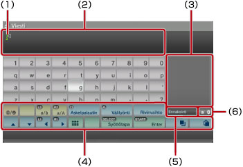
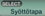
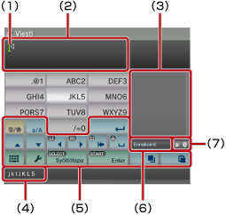

Tietoja XMB™-valikosta > Näppäimistön käyttäminen
Näppäimistön käyttäminen
Näppäimistö tulee automaattisesti näyttöön, kun tekstin kirjoittaminen on tarpeen. Näissä ohjeissa oletetaan, että käytössä on englanninkielinen näppäimistö. Lisätietoja muiden kielen näppäimistöjen käyttämisestä on kyseisen kielen käyttöoppaassa.

(1) |
Kohdistin |
|---|---|
(2) |
Tekstinsyöttökenttä |
(3) |
Näyttää ennakoivan tekstin vaihtoehtoja |
(4) |
Toimintonäppäimet |
(5) |
Näyttää, onko ennakoiva teksti käytössä |
(6) |
Syöttötilan näyttö |
Näppäinten luettelo
Näytössä näytettävät näppäimet määräytyvät syöttötilan ja tilanteen mukaan.
 |
Lisää symbolin tai hymiön |
|---|---|
 |
Vaihtaa syötettävien merkkien tyyppiä |
| Siirtää kohdistinta | |
| Poistaa kohdistimen vasemmalla puolella olevan merkin | |
| Lisää välilyönnin | |
| Lisää rivinvaihdon | |
 |
Kopioi tai liittää tekstiä |
 |
Vaihtaa käyttöön pienikokoisen näppäimistön |
 |
Vaihtaa syöttötilaa |
 |
Vahvistaa vahvistamattomat kirjoitetut merkit / lopettaa näppäimistön käytön |
Merkkien syöttäminen
Kun käytät ennakoivaa tilaa, voit sanan ensimmäiset kirjaimet kirjoittamalla tuoda näyttöön luettelon tavallisista kyseisillä kirjaimilla alkavista sanoista. Tämän jälkeen voit valita haluamasi sanan suuntanäppäimillä. Kun olet lopettanut tekstin syöttämisen, lopeta näppäimistön käyttö valitsemalla "Enter"-näppäin.
Vihjeitä
- Joissakin syöttötiloissa ei voi käyttää hymiöitä.
- Tekstin syöttämiseen käytettävissä olevat kielet ovat samat kuin tuetut järjestelmäkielet. Jos esimerkiksi järjestelmän kieliasetukseksi on määritelty ranska, voit kirjoittaa ranskankielistä tekstiä. Voit määrittää järjestelmän kieliasetuksen valitsemalla
 (Asetukset) >
(Asetukset) >  (Järjestelmäasetukset) > [Järjestelmäkieli].
(Järjestelmäasetukset) > [Järjestelmäkieli]. - Voit tyhjentää koko tekstinsyöttökentän painamalla
 - ja L1-näppäimiä yhtä aikaa.
- ja L1-näppäimiä yhtä aikaa.
Laitteeseen yhdistetyn näppäimistön käyttäminen
Voit kirjoittaa tekstiä USB- tai Bluetooth®-näppäimistöllä (lisävarusteita). Kun tekstinsyöttöruutu on näytössä, voit käyttää järjestelmään liitettyä näppäimistöä tekstin kirjoittamiseen painamalla mitä tahansa näppäimistön näppäintä.
Vihjeitä
- Lisätietoja Bluetooth®-näppäimistön kytkemisestä on tämän oppaan kohdassa (Asetukset) >
 (Lisälaiteasetukset) > [Hallinnoi Bluetooth®-laitteita].
(Lisälaiteasetukset) > [Hallinnoi Bluetooth®-laitteita]. - Ennakoivaa tilaa ei voi käyttää järjestelmään liitettyä näppäimistöä käytettäessä.
- Voit lisätä rivinvaihdon tekstinsyöttökentässä painamalla ALT + ENTER. Rivinvaihdon voi lisätä vain, jos sellainen tarvitaan, kuten kirjoitettaessa viestiä
 (Ystävät) -kategoriassa.
(Ystävät) -kategoriassa. - Voit tyhjentää koko tekstinsyöttökentän painamalla SHIFT- + BACKSPACE-näppäimiä yhtä aikaa.
- Voit liittää kopioidun tekstin painamalla Ctrl + V. Viimeksi kopioitu teksti liitetään.
Pienikokoisen näppäimistön käyttäminen
Jos valitset -kuvakkeen täysikokoisesta näppäimistöstä, käyttöön tulee pienikokoinen näppäimistö. Pienikokoisessa näppäimistössä yksittäisen näppäimen avulla voi valita useita eri merkkejä.

(1) |
Kohdistin |
|---|---|
(2) |
Tekstinsyöttökenttä |
(3) |
Näyttää ennakoivan tekstin vaihtoehtoja |
(4) |
Näyttää merkit, joita voi syöttää valitun merkin avulla. |
(5) |
Toimintonäppäimet |
(6) |
Näyttää, onko ennakoiva teksti käytössä |
(7) |
Syöttötilan näyttö |
 ja paina -näppäintä kuusi kertaa. Jos haluat kirjoittaa [L5], valitse
ja paina -näppäintä kuusi kertaa. Jos haluat kirjoittaa [L5], valitse  -näppäimellä kohdistin [L]-kirjaimen perään. Valitse tämän jälkeen
-näppäimellä kohdistin [L]-kirjaimen perään. Valitse tämän jälkeen Vihje
Voit käyttää myös Kertanäpäytys-tilaa tekstin syöttämiseen. Voit vaihtaa tekstisyöttötilaa "Asetukset"-näppäimen avulla. Kun Kertanäpäytys-tila on käytössä, ennakoivan tekstin syötön vaihtoehtoina näkyvät sanat, jotka voidaan luoda kunkin valitun näppäimen yhden kirjaimen (tai numeron) yhdistelmistä. Jos esimerkiksi valitset "DEF3"-näppäimen, ennakoivan tekstin syötön vaihtoehtoina näyttönäppäimistön oikealla puolella näkyvät sanat, jotka alkavat merkeillä d, e, f tai 3. Jos näytössä näkyy symboli ">", jatka kirjaimien syöttämistä, kunnes ennakoivan tekstinsyötön vaihtoehdot näkyvät näytössä.
Näppäinten luettelo
Näytössä näytettävät näppäimet määräytyvät syöttötilan ja tilanteen mukaan.
 |
Lisää symbolin |
|---|---|
 |
Vaihtaa käyttöön isot tai pienet kirjaimet |
 |
Lisää rivinvaihdon |
| Siirtää kohdistinta | |
 |
Poistaa kohdistimen vasemmalla puolella olevan merkin |
 |
Lisää välilyönnin |
|
Kopioi tai liittää tekstiä |
 |
Vaihtaa käyttöön täysikokoisen näppäimistön |
 |
Näyttää asetusvalikon |
| Vaihtaa syöttötilaa | |
 |
Vahvistaa vahvistamattomat kirjoitetut merkit / lopettaa näppäimistön käytön |